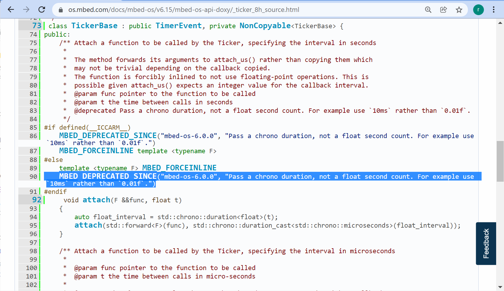

ARM Mbed OS#
เนื้อหาในส่วนนี้เกี่ยวข้องกับการใช้งาน ARM Mbed OS ซึ่งเป็นระบบปฏิบัติการเวลาจริง (RTOS) เหมาะสำหรับงานด้าน IoT และเป็นซอฟต์แวร์ประเภท Open Source ที่ได้มีการพัฒนามาเพื่อใช้งานกับไมโครคอนโทรลเลอร์ของบริษัทต่าง ๆ ที่มีตัวประมวลผลตระกูล ARM Cortex-M Series
Keywords: ARM Cortex-M Series, Mbed OS, RTOS, Multi-Threading
▷ โครงการ ARM Mbed และความเป็นมา#
ARM Mbed เป็นโครงการที่มีจุดเริ่มต้นในราวปี ค.ศ. 2005 ซึ่งเกิดจากการสนทนาในช่วงพักดื่มน้ำชา ระหว่างนักพัฒนาสองท่านคือ Simon Ford และ Chris Styles และเป็นพนักงานของบริษัท Arm Ltd. (UK) ในช่วงเวลานั้น ทั้งคนได้ร่วมกันทำกิจกรรมเพื่อช่วยให้นักเรียนในชมรมอิเล็กทรอนิกส์ของโรงเรียน หรือให้คำปรึกษาสำหรับโครงงานของนักศึกษาได้หันมาสนใจการเรียนรู้และใช้งานไมโครคอนโทรลเลอร์
แต่จากปัญหาและอุปสรรคในการทำงานที่ทั้งสองได้รับรู้มา ก็นำไปสู่แนวคิดที่จะออกแบบฮาร์ดแวร์ เช่น บอร์ดไมโครคอนโทรลเลอร์ และซอฟต์แวร์ที่นำมาใช้งานได้ง่ายขึ้นสำหรับผู้ใช้ทั่วไป และสามารถใช้งานผ่านหน้าเว็บเบราว์เซอร์ได้
จากแนวความคิดดังกล่าว ทางบริษัท Arm Ltd. ได้มีการสนับสนุน จนในปี ค.ศ. 2009 จึงได้เปิดตัวโครงการที่มีชื่อว่า mbed (คงหมายถึงคำว่า "embedded") ให้กลุ่มผู้ใช้แบบออนไลน์ (Online Community) และมีซอฟต์แวร์ประเภท Cloud-based Integrated Development Environment (IDE) แบบออนไลน์ ให้ใช้งานได้ฟรี
—— อ้างอิงจากบทความ "Founders interview: An interview with the mbed originators"
▷ ARM Mbed Compiler#
ซอฟต์แวร์หลักคือ Mbed Compiler (https://ide.mbed.com/compiler) ผู้ใช้สามารถสมัครและสร้างบัญชีผู้ใช้ได้ฟรี และเข้าใช้งานโดยใช้เว็บเบราว์เซอร์ ซอฟต์แวร์นี้ประกอบไปด้วย
- Arm C/C++ Compiler ใช้คอมไพเลอร์ ARMCC เหมือนกับ Keil MDK-ARM (Microcontroller Development Kit for ARM) ซึ่งเป็นซอฟต์แวร์ประเภท Commercial
- Code Editor สำหรับการเขียนโค้ด
- Mbed OS ซึ่งเป็นระบบปฏิบัติการเวลาจริง และ
- Libraries / Drivers เป็นต้น
รูปภาพ: ARM Mbed Software - IDE & Toolchains (Source: Arm Mbed)
รูปภาพ: ตัวเลือกซอฟต์แวร์ประเภท IDEs ของบริษัท Arm Ltd. / Keil
รูปภาพ: ตัวเลือกซอฟต์แวร์นอกเหนือจาก IDEs เช่น Compilers / Toolchains และประเภทอื่น
▷ Mbed OS ตัวเลือกสำหรับการใช้งาน RTOS#
ในการพัฒนาแอพพลิเคชันสำหรับระบบสมองกลฝังตัว ในหลายกรณีการใช้งานระบบปฏิบัติการประเภท RTOS ก็อาจมีความจำเป็น ดังนั้นทาง ARM Mbed จึงได้พัฒนา Mbed OS ซึ่งเป็น Open Source RTOS เพื่อวัตถุประสงค์ดังกล่าว และมีการแชร์โค้ดที่เกี่ยวข้องไว้ใน Github Repo
รูปภาพ: Mbed OS repository on Github
Mbed OS ได้มีการพัฒนามาหลายเวอร์ชัน (Releases) โดยสามารถจำแนกได้ดังนี้
- Mbed OS 2 ("Classic"): release date: February 28, 2013
- Mbed OS 3 ("Eventing OS"): release date: October 15, 2015
- Mbed OS 5 ("Mbed 2 + Mbed 3"): release date: August 5, 2016
- Mbed OS 6: release date: June 4, 2020
Mbed OS 5 เป็นจุดเริ่มต้นของการนำ Mbed OS 2 กับ Mbed OS 3 มารวมกัน และได้มีการเปลี่ยนมาใช้ Real-Time Kernel ที่มีชื่อว่า RTX (v4.79.0) ซึ่งเป็นของบริษัท Keil และนำมาเผยแพร่ให้เป็น Open Source (Apache License)
รูปภาพ: การนำ Mbed OS เวอร์ชัน 2 และ 3 มารวมกันเป็นเวอร์ชัน 5
Mbed OS จากเวอร์ชัน 5 ไปสู่เวอร์ชัน 6 ใช้เวลาในการพัฒนาประมาณ 4 ปี และมีการปรับปรุงเพื่อรองรับการใช้งานด้าน IoT และใช้งานร่วมกับบริการ IoT Cloud Services (Cloud services support) ยกตัวอย่างเช่น
- Amazon Web Services (AWS)
- Microsoft Azure
- Google IoT Cloud
และรองรับรูปแบบการสื่อสารเชื่อมต่อด้วยโพรโทคอลแบบต่าง ๆ เช่น
- Ethernet
- Wi-Fi
- Bluetooth LE
- NFC / RFID
- Cellular
- 6LoWPAN Sub-GHz Mesh
- LoRa LPWAN
ในปัจจุบัน (ขณะที่จัดทำเอกสารนี้) เวอร์ชันล่าสุดคือ Mbed OS 6.15.0 (อ้างอิงจาก: https://os.mbed.com/mbed-os/releases)
รูปแบบการใช้งาน Mbed OS แบ่งเป็น 2 ลักษณะ (เรียกว่า Profiles) ดังนี้
- Mbed OS Full Profile: เป็น Default Profile เหมาะสำหรับงานที่ต้องการใช้ RTOS (ใช้ Keil RTX ตามรูปแบบของ CMSIS RTOS)
- Mbed OS Bare-Metal Profile
(อ้างอิง):
เหมาะสำหรับงานที่ไม่ต้องการใช้ RTOS (ไม่มีการทำงานแบบหลายเธรด มีเพียงเธรดหลักเท่านั้น และไม่ได้ใช้ Keil RTX)
ทำให้โค้ดมีขนาดเล็กลงเมื่อคอมไพล์แล้ว (Smaller Memory Footprint)
โปรแกรมจะทำงานตามโปรไฟล์นี้ โดยใช้หลักการของ Interrupt / Event-driven Programming
และในส่วนของการใช้งานไลบรารีสำหรับภาษา C หรือที่เรียกว่า Standard C library ก็จะใช้แบบ
small(แทนที่จะเป็นstd) ซึ่งหมายถึง ไลบรารีmicrolib(สำหรับ ARMCC toolchain) หรือnewlib-nano(GCC ARM toolchain) ซึ่งมีขนาดเล็ก (และฟังก์ชันก็ไม่จำเป็นต้องเป็น thread-safe)
การเลือกโปรไฟล์แบบ Bare-Metal ของ Mbed OS เพื่อใช้งาน
ก็ทำได้โดยการเขียนระบุไว้ในไฟล์ mbed_app.json ของโปรเจกต์
พร้อมกับการเลือกใช้ Small-footprint C Library ตามตัวอย่างดังนี้
{
"requires": ["bare-metal"],
"target_overrides": {
"*": {
"target.c_lib": "small"
}
}
}
นอกจากนั้นแล้วในไฟล์ CMakeLists.txt ภายใต้ไดเรกทอรีของโปรเจกต์
จะต้องมีการแก้ไขชื่อของไลบรารีสำหรับ Mbed ที่จะใช้งาน ในบรรทัดดังนี้
(เปลี่ยนจาก mbed-os ไปเป็น mbed-baremetal)
target_link_libraries(${APP_TARGET} mbed-baremetal)
▷ การจัดกลุ่มของ Mbed API#
การจัดกลุ่มของ ARM Mbed APIs แบ่งเป็น 3 ช่วง ดังนี้
- Experimental — เป็นเวอร์ชันที่มีการทดลองฟังก์ชันการทำงานใหม่ อาจยังมีบักและไม่เสถียร
- Stable — เป็นเวอร์ชันที่ถือว่า มีความเสถียรในการใช้งาน
- Deprecated — ยังใช้ได้แต่จะถูกถอดหรือยกเลิกการใช้ในอนาคต ( An API that will be removed in the next major release. )
และยังมีการแบ่งระดับของ Software Releases (Mbed OS x.y.z) ดังนี้
- Major release เช่น เปลี่ยนจาก v5.0 เป็น v6.0
- Feature release เช่น v6.15.0
- Patch release เช่น v6.15.1 เน้นการแก้ไขข้อผิดพลาด (Bug Fixes) มีการเพิ่มบอร์ดใหม่ (Support for New Target Boards) เป็นต้น
การเปลี่ยนเวอร์ชันจาก Mbed OS 2 เป็น Mbed OS 5 และ Mbed OS 6 ซึ่งถือว่าเป็น
Major Releases ตามลำดับ และมีการเปลี่ยนแปลงของ Mbed OS API
ค่อนข้างมาก เช่น บางฟังก์ชันก็มีสถานะเป็น deprecated (ไม่แนะนำให้ใช้ และจะมีการตัดออกไปหรือเลิกใช้ในอนาคต)

รูปภาพ: ตัวอย่างโค้ดของเมธอดของคลาส TickerBase ที่มีการระบุว่าเป็น
MBED_DEPRECATED_SINCE สำหรับ Mbed 6.6 เป็นต้นไป
▷ ซอฟต์แวร์ที่เป็นองค์ประกอบของ Mbed OS#
โครงสร้างเชิงสถาปัตยกรรมของซอฟต์แวร์สำหรับ Mbed OS มีการแบ่ง APIs ออกเป็นกลุ่มต่าง ๆ ตามลักษณะการใช้งาน เช่น
- OS Core APIs โดยมีพื้นฐานอยู่บนข้อกำหนด CMSIS-RTOS ของบริษัท Arm Ltd. สำหรับการเขียนโปรแกรมโดยใช้ RTOS
- Security APIsเช่น มีการพัฒนาไลบรารีที่มีชื่อว่า MbedTLS สำหรับการเชื่อมต่อแบบปลอดภัยในระบบเครือข่ายโดยใช้ TLS และการเข้ารหัสข้อมูล เป็นต้น
- Connectivity APIs เช่น การสื่อสารโดยใช้รูปแบบของ MQTT หรือ CoAP การสื่อสารโดยใช้ TCP/IP โดยใช้ Ethernet หรือ Wi-Fi และการสื่อสารโดยใช้ Bluetooth (BLE / Bluetooth Mesh) เป็นต้น
- Storage APIs สำหรับการจัดเก็บข้อมูล เช่น ในหน่วยความจำแบบ Flash NAND / NOR หรือการ์ดหน่วยความจำ MicroSD เป็นต้น

รูปภาพ: Mbed OS 6 Software Components (Source: ARM Mbed)
CMSIS-RTOS เป็นการกำหนด APIs ภายใต้กรอบใหญ่คือ ARM CMSIS v5 สำหรับใช้งาน RTOS และในปัจจุบัน มีสองเวอร์ชัน ได้แก่
- CMSIS-RTOS v1 (Version 1.03) ใช้สำหรับไมโครคอนโทรลเลอร์ตระกูล ARM Cortex-M Series เท่านั้น และได้เลือก Keil RTX v4 เป็นพื้นฐานในการพัฒนาตาม API ที่กำหนด
- CMSIS-RTOS v2 (CMSIS-RTOS2 Version 2.1.3) ใช้งานได้กับทั้งสถาปัตยกรรม ARM Cortex-M / Cortex-A Series และได้เลือก Keil RTX v5 เป็นพื้นฐานในการพัฒนาตาม API ที่กำหนดไว้
การกำหนดรูปแบบของ Mbed OS APIs ทำให้เราสามารถเขียนโค้ดสำหรับนำไปใช้กับไมโครคอนโทรลเลอร์ที่แตกต่างกันได้
ถ้าลองดูใน Official Mbed OS Repository
ภายใต้ไดเรกทอรี targets
จะเห็นตัวอย่างไดเรกทอรีย่อย จำแนกตามชื่อไมโครคอนโทรลเลอร์ของบริษัทต่าง ๆ ที่ใช้งานได้กับ Mbed OS
TARGET_Ambiq_MicroTARGET_Analog_DevicesTARGET_CypressTARGET_FreescaleTARGET_GigaDeviceTARGET_MaximTARGET_NORDICTARGET_NUVOTONTARGET_NXPTARGET_RENESASTARGET_STMTARGET_Silicon_LabsTARGET_RASPBERRYPI(Mbed OS for Arduino Core)
ยกตัวอย่างการทำงานในส่วนที่เรียกว่า Mbed Drivers ซึ่งเกี่ยวข้องกับการใช้งานวงจรภายในของชิป (On-chip Peripherals) หรือจะมองว่าเป็น Hardware Abstraction Layer อีกระดับหนึ่งที่สูงขึ้นไป (เหมือนกรณีที่มีการพัฒนา Arduino Core APIs เพื่อใช้กับไมโครคอนโทรลเลอร์ได้หลายตระกูล)
- ถ้าเลือกใช้ไมโครคอนโทรลเลอร์ เช่น STM32F4 Series ของบริษัท STMicroelectronics โค้ดในระดับล่างของ Mbed OS อาศัยการทำงานของซอฟต์แวร์ที่เรียกว่า STM32F4 HAL APIs ซึ่งเป็นส่วนหนึ่งของ STM32Cube_F4 MCU Firmware Package
- ถ้าเลือกเลือกใช้ชิป nRF52 Series ของบริษัท Nordic Semiconductor โค้ดของ Mbed OS จะทำงานโดยอาศัยซอฟต์แวร์ Nordic nRF5-SDK
- ถ้าเลือกใช้ชิป Raspberry Pi RP2040 ก็จะต้องใช้ซอฟต์แวร์ Raspberry Pi C/C++ SDK เป็นพื้นฐานในการทำงานระดับล่าง

รูปภาพ: STM32 MCU Package Architecture (Source: STMicroelectronics)
รูปภาพ: Nordic SDK Architecture (Source: Nordic Semiconductor)
ลองมาพิจารณาดูตัวอย่าง Arduino Cores เพื่อนำไปใช้งานกับบอร์ดไมโครคอนโทรลเลอร์ดังนี้
- Arduino Nano 33 BLE (nRF52840 SoC)
- Arduino Portenta H7 (STM32H747 SoC)
- Arduino Nano RP2040 Connect (RP2040 SoC)
ในทั้งสามกรณีนี้ มีการใช้งาน Arduino Core APIs อยู่ชั้นบนสุด ถัดลงมาเป็น Mbed OS APIs และชั้นต่ำลงมาอีกชั้นจึงเป็นการใช้งาน nRF52 SDK, STM32CubeH7 / STM32H7 HAL และ RP2040 SDK แยกในแต่ละกรณี (เป็น Target-specific Implementation)
▷ ตัวอย่างคลาสสำหรับไดร์เวอร์ของ Mbed API#
การเขียนโค้ดภาษา C/C++ โดยใช้ ARM Mbed APIs จะเกี่ยวข้องกับการใช้งานคลาส C++ ในส่วนที่เรียกว่า Mbed Drivers สำหรับวงจรพื้นฐานของไมโครคอนโทรลเลอร์ที่มักมีให้ใช้งานได้ทั่วไป เช่น
DigitalIn|DigitalOut|DigitalInOutสำหรับการใช้งานขา GPIO (General-Purpose I/O) ในโหมดดิจิทัล-อินพุตหรือเอาต์พุตInterruptInสำหรับการใช้งานขาอินพุตในโหมดอินเทอร์รัพท์PortIn|PortOut|PortInOutสำหรับการใช้งานขาของ I/O Port เดียวกัน แต่เลือกได้ว่าจะใช้ขาใดบ้างBusIn|BusOut|BusInOutสำหรับการใช้งานขา GPIO แบบดิจิทัลหลายขาพร้อมกันAnalogIn|AnalogOutสำหรับการใช้งานขาแบบแอนะล็อกสำหรับ ADC (Analog-to-Digital Converter) และ DAC (Digital-to-Analog Converter)PwmOutสำหรับการใช้งานขา GPIO เป็นเอาต์พุตเพื่อสร้างสัญญาณประเภท PWM (Pulse Width Modulation)I2C|I2CSlaveสำหรับการใช้งานบัส I2C โหมด I2C Master หรือ I2C SlaveSPI|SPISlaveสำหรับการใช้งานบัส SPI โหมด SPI Master หรือ SPI SlaveSerialสำหรับการใช้งาน Serial (UART) แบ่งเป็น 2 กรณี คือBufferedSerialและUnbufferedSerialสำหรับการใช้งานบัส USB รูปแบบต่าง ๆ ในกรณีที่ไมโครคอนโทรลเลอร์รองรับการใช้งาน Native USB เช่นUSBสำหรับไมโครคอนโทรลเลอร์ที่รองรับการใช้งาน Native USB และมีรูปแบบการใช้งาน เช่น USB CDC, USB Mass Storage, USB HID เป็นต้นCANสำหรับการใช้งานบัส CAN (Controller Area Network)
▷ บอร์ดไมโครคอนโทรลเลอร์สำหรับ Mbed ยุคแรก#
Mbed-enabled Platforms หมายถึง บอร์ดไมโครคอนโทรลเลอร์ที่ใช้ซีพียูตระกูล ARM Cortex-M จากหลายบริษัท และสามารถนำมาใช้ได้กับ Mbed OS (แต่ต้องพิจารณาดูเวอร์ชันที่ใช้ได้ด้วย) รายการของบอร์ดไมโครคอนโทรลเลอร์สามารถดูได้จากเว็บ https://os.mbed.com/platforms/
ในช่วงแรกได้มีการพัฒนาบอร์ดไมโครคอนโทรลเลอร์ออกมา เพื่อสาธิตการทำงานของ Mbed OS แต่มีให้เลือกใช้เพียงไม่กี่บอร์ด เช่น

รูปภาพ: บอร์ด mbed NXP LPC1768 และ Pin Out Diagram
รูปภาพ: บอร์ด mbed NXP LPC11U24 และ Pin Out Diagram
หนังสือเล่มแรกที่แนะนำการใช้งานบอร์ด Mbed LPC1768 คือ "Fast and Effective Embedded Systems Design" ผู้แต่งคือ Rob Toulson & Tim Wilmshurst และได้มีการตีพิมพ์ครั้งแรกในปี ค.ศ. 2012 และครั้งที่สองในปี ค.ศ. 2017 ตามลำดับ
รูปภาพ: หน้าปกหนังสือ Fast and Effective Embedded Systems Design (2ed)
ตัวอย่างของหนังสืออีกเล่มหนึ่งที่กล่าวถึงการใช้งาน Mbed OS สำหรับบอร์ด NXP LPC1768 และ Freescale FRDM-K64F คือ "Designing Embedded Systems and the Internet of Things (IoT) with the ARM mbed" ผู้แต่งคือ Perry Xiao ตีพิมพ์ในปี ค.ศ. 2018
คำแนะนำ: ในการเลือกหนังสือเพื่อนำมาศึกษา เนื่องจากว่า Mbed OS มีการเปลี่ยนแปลงอย่างต่อเนื่อง หนังสือบางเล่มที่ได้มีการตีพิมพ์มาหลายปีแล้ว อาจมีเนื้อหา เช่น ตัวอย่างโค้ด หรือการใช้ Mbed OS API เป็นเวอร์ชันเก่า
▷ รายการบอร์ดไมโครคอนโทรลเลอร์สำหรับ Mbed#
ถ้าดูจากรายการ Mbed Platforms จะเห็นว่า ในปัจจุบันมีจำนวนบอร์ดไมโครคอนโทรลเลอร์ที่ใช้งานได้กับ Mbed OS มากขึ้น โดยส่วนใหญ่แล้วก็เป็นของบริษัท STMicroelectronics เช่น บอร์ดในกลุ่ม STM32 Nucleo เป็นต้น และบอร์ดของบริษัท NXP/Freescale ซึ่งทั้งสองบริษัทเป็น Mbed Official Partners มาตั้งแต่ช่วงเริ่มเปิดตัวโครงการ
รูปภาพ: ตัวอย่างบอร์ดของ STM

รูปภาพ: ตัวอย่างบอร์ดของ NXP/Freescale
Community supported boards: นอกจากบอร์ดในกลุ่มที่เรียกว่า "Official Mbed-enabled" แล้ว ARM Mbed ก็เปิดโอกาสให้นักพัฒนาสามารถเพิ่ม Custom Boards อื่นมาใช้ได้ด้วย เช่น
- BluePill STM32F103 (ARM Cortex-M3) สามารถทำงานได้กับ Mbed OS 6.2
- TI MSP432 (ARM Cortex-M4F) สามารถทำงานได้กับ Mbed OS 6.1 ~ 6.11
▷ ซอฟต์แวร์สำหรับ Mbed#
ข้อดีของการใช้ Online IDE & Toolchain คือ ผู้ใช้ไม่ต้องติดตั้งโปรแกรมใด ๆ ในเครื่องคอมพิวเตอร์ของผู้ใช้ เข้าใช้งานได้โดยเปิดเว็บเบราว์เซอร์ แต่ก็จะต้องเชื่อมต่อกับอินเทอร์เน็ตเพื่อใช้งาน และถ้าจะนำไฟล์ที่ได้จากการคอมไพล์ไปใช้กับบอร์ด จะต้องดาวน์โหลดไฟล์ไบนารี .bin มายังคอมพิวเตอร์ของผู้ใช้ แล้วนำไปอัปโหลดไปยังบอร์ดทดลอง ซึ่งถือว่า ไม่สะดวกในการใช้งาน
รูปภาพ: ตัวอย่างการใช้งาน Mbed online IDE

รูปภาพ: การเลือกหรือเปลี่ยนบอร์ดไมโครคอนโทรลเลอร์เมื่อใช้งาน Mbed Online IDE
นอกจากการใช้งานซอฟต์แวร์แบบออนไลน์แล้ว ก็มีตัวเลือกสำหรับใช้งานแบบ Desktop (Offline) ดังนี้
- Mbed CLI v1
เป็น Python-based Command Line Tools เวอร์ชันแรก
ใช้ชื่อคำสั่ง
mbed-cliสำหรับจัดการโปรเจกต์และคอมไพล์โค้ดที่ใช้ Mbed OS 2 และ Mbed OS 5.x ไปจนถึง Mbed OS 6.4 - Mbed CLI v2
เป็น Python3-based Command Line Tools เวอร์ชันสอง
และใช้ชื่อคำสั่ง
mbed-toolsและได้มีการเปลี่ยนมาใช้ CMake และ Ninja Build System สำหรับจัดการโปรเจกต์และคอมไพล์โค้ดที่ใช้ Mbed OS 6.5 หรือสูงกว่า- อ่านบทความ: แนะนำการใช้งาน ARM Mbed CLI 2 สำหรับระบบปฏิบัติการ Linux หรือ Windows และทดลองกับบอร์ด STM32 NUCLEO ในเบื้องต้น
- ARM Mbed Studio เป็นซอฟต์แวร์ Desktop App ประเภท IDE สำหรับระบบปฏิบัติการ Windows / Linux / Mac OS (64 บิต) และใช้ Eclipse THEIA IDE และ Monaco Editor เป็นพื้นฐานในการพัฒนา ในส่วนของคอมไพล์เลอร์จะใช้ Arm C/C++ Compiler 6 (AC6) ของบริษัท Arm Ltd.
รูปภาพ: Mbed Studio IDE และการดาวน์โหลดไฟล์เพื่อติดตั้งใช้งาน

รูปภาพ: ตัวอย่างการใช้งาน Mbed Studio IDE
โปรเจกต์ที่ผู้ใช้ได้สร้างขึ้นเมื่อใช้งาน Mbed Online Compiler แบบออนไลน์ ก็สามารถนำออกมา (Export) มาใช้กับ IDE แบบ Offline ได้ มีหลายตัวเลือก เช่น
- Keil µVision IDE
- Eclipse IDE / CDT Plugin + GNU Arm Embedded Toolchain
- Visual Studio Code + GNU Arm Embedded Toolchain
- SW4STM32 System Workbench for STM32
- ...
รูปภาพ: ตัวเลือกสำหรับการนำออกโปรเจกต์ใน Mbed Online IDE
▷ ซอฟต์แวร์จำลองการทำงาน Mbed#
Jan Jongboom ซึ่งเป็นหนึ่งในทีมงาน Mbed Labs ในขณะนั้น ได้พัฒนา Mbed OS Simulator ซึ่งเป็นซอฟต์แวร์ประเภท Open Source และได้แชร์โค้ดไว้ใน Github (https://github.com/janjongboom/mbed-simulator)
โปรแกรมนี้ใช้ภาษา JavaScript / Nodejs ในการทำงาน และใช้ Emscripten ซึ่งเป็นคอมไพล์เลอร์ที่ทำหน้าที่แปลงโค้ดภาษา C/C++ ให้เป็น JavaScript หรือ WebAssembly ได้ ดังนั้นโค้ดที่ใช้ Mbed OS 5 จึงสามารถนำไปรันบนหน้าเว็บเบราว์เซอร์ได้ แต่ก็มีข้อจำกัด เช่น
- เลือกโค้ดจากตัวอย่าง (Demos) มาลองรันได้เท่านั้น แก้ไขโค้ดตัวอย่างได้ ผู้ใช้ไม่สามารถสร้างโปรแกรมใหม่ได้
- ไม่รองรับการทำงานแบบ Multi-threading (เป็น single-threaded)
- ใช้คำสั่งของ Mbed OS 5 แต่ไม่รองรับ Mbed OS 6
แต่หลังจาก Jan Jongboom ได้ลาออกไปร่วมก่อตั้งบริษัทใหม่ โปรเจกต์นี้ก็ไม่ได้มีการพัฒนาต่อ
ดังนั้นจึงแนะนำให้เข้าไปลองใช้งาน Mbed Simulator: https://simulator.mbed.com/ เฉพาะสำหรับ ผู้ที่เริ่มต้นใช้งาน Mbed OS และยังไม่มีอุปกรณ์ฮาร์ดแวร์
ในการทดลองเท่านั้น ลองเขียนโค้ดใหม่โดยใช้คำสั่งต่าง ๆ ของ Mbed Driver API เช่น
DigitalOut, DigitalIn, InterruptIn, BusOut, PwmOut เป็นต้น
รูปภาพ: Web-based Mbed Simulator
▷ หลักการทำงานของเธรดใน Mbed OS#
ถ้าอ้างอิงจากเอกสารออนไลน์ Mbed OS - Scheduling Concepts จะทราบได้ว่า Mbed OS / Full Profile มีการกำหนดสถานะของเธรด (Thread States) ไว้ดังนี้
- Running: เป็นสถานะที่เธรดนั้นกำลังทำงาน และจะมีเพียงเธรดเดียวเท่านั้นในระบบที่ทำงานในช่วงเวลาหนึ่ง
- Ready: เป็นสถานะของเธรดที่พร้อมจะทำงาน และยังไม่ได้ทำงาน
- Waiting: เป็นสถานะที่เธรดกำลังรอเหตุการณ์บางอย่าง และไม่ทำงาน
- Inactive: เป็นสถานะของเธรดที่ยังไม่ถูกสร้างขึ้นมา หรือได้จบการทำงานไปแล้ว
เมื่อเธรดที่กำลังทำงานอยู่ได้จบการทำงานลง (Terminated) หรือได้เปลี่ยนไปเป็นสถานะรอ (Waiting) ก็จะทำให้เธรดที่พร้อมจะทำงานและมีระดับความสำคัญสูงสุดในกลุ่มที่พร้อมจะทำได้ ได้ถูกเลือกให้ทำงานเป็นลำดับถัดไป
หรือในอีกกรณีหนึ่ง ถ้าเธรดที่กำลังรออยู่ ได้เปลี่ยนสถานะเป็นพร้อมที่จะทำงานเมื่อเกิดเหตุการณ์หรือเงื่อนไขบางอย่างเป็นจริง
จะทำให้การรอจบลง และถ้าเธรดดังกล่าวมีความสำคัญสูงกว่าเธรดที่อยู่ในสถานะทำงานขณะนั้น
ก็จะเกิดการเปลี่ยนบริบทของเธรดในการทำงาน เพื่อให้เธรดที่พร้อมและมีความสำคัญสูงกว่าได้ทำงานทันที
กรณีนี้เรียกว่า Premption
รูปภาพต่อไปนี้แสดงให้เห็นสถานะของเธรดและเงื่อนไขในการเปลี่ยนแปลงสถานะของเธรด (State Transitions)

รูปภาพ: สถานะของเธรดในระบบ RTOS ของ Mbed OS (Source: ARM Mbed)
ถ้าเธรดอยู่ในสถานะรอ ก็มีการจำแนกกรณีที่เกิดขึ้นสำหรับ Mbed OS ไว้ดังนี้
- WaitingDelay: การหยุดเพื่อรอเวลาให้ผ่านไปตามระยะเวลาที่กำหนดไว้
- WaitingJoin: การหยุดรอเพื่อให้อีกเธรดหนึ่งจบการทำงานก่อน
- WaitingThreadFlag: การรอเพื่อให้เกิดการเซตค่าของ Flag สำหรับเธรด (เรียกว่า Thread Flag)
- WaitingEventFlag: การรอเพื่อให้เกิดการเซตค่าของ Flag สำหรับเหตุการณ์ (เรียกว่า Event Flag)
- WaitingMutex: การรอเพื่อให้เกิดเหตุการณ์ที่เกี่ยวข้องกับการทำงานของ Mutex
- WaitingSemaphore: การรอเพื่อให้เกิดเหตุการณ์ที่เกี่ยวข้องกับการทำงานของ Semaphore
- WaitingMemoryPool: การรอเพื่อเข้าถึง Memory Pool หรือ MailBox
- WaitingMessageGet: การรอรับข้อความถัดไป
- WaitingMessagePut: การรอที่จะส่งข้อความออกไป
ดังนั้นหากต้องการจะศึกษาวิธีการเขียนโค้ดโดยใช้ Mbed OS ก็ควรจะทำความเข้าใจหลักการทำงานของ RTOS โดยทั่วไป เช่น การทำงานของเธรด การสร้างเธรดใหม่ สถานะของเธรด การรอเหตุการณ์และการสื่อสารกันระหว่างเธรด (Inter-Thread Synchronization & Communication) และสิ่งที่ RTOS มีให้ใช้สำหรับการสื่อสารหรือรอจังหวะกันระหว่างเธรดในรูปแบบต่าง ๆ (เช่น Thread Flags / Event Flags / Semaphores / Mutexes / Memory Pools เป็นต้น)
▷ กล่าวสรุป#
Mbed เป็นอีกตัวเลือกหนึ่งสำหรับผู้ที่สนใจจะใช้ระบบปฏิบัติการเวลาจริง และซอฟต์แวร์อื่นที่เกี่ยวข้อง เพื่อนำมาใช้ในการพัฒนาซอฟต์แวร์สำหรับไมโครคอนโทรลเลอร์แบบมืออาชีพ จุดเด่นคือ เป็นซอฟต์แวร์ประเภท Open Source สามารถนำมาใช้งานกับบอร์ดไมโครคอนโทรลเลอร์ได้หลายแบบ แต่มีข้อจำกัดว่าต้องเป็นตัวประมวลผลที่ใช้สถาปัตยกรรมของ Arm เท่านั้น (เช่น Arm Cortex-M / Cortex-A Series)
ในเรื่องของการพัฒนาซอฟต์แวร์ ก็มีบริษัท Arm Ltd. เป็นผู้สนับสนุน ร่วมกับบริษัท Partners เช่น NXP / ST เป็นต้น ทำให้มีการพัฒนาอย่างต่อเนื่อง มีซอฟต์แวร์ให้เลือกใช้งานทั้งแบบออนไลน์ในระบบคลาวด์ (เช่น Mbed Online Compiler และ Keil Studio Cloud IDE) และแบบติดตั้งในเครื่องคอมพิวเตอร์ของผู้ใช้ (Mbed CLI / Mbed Studio) หรือจะใช้ซอฟต์แวร์อื่นอย่างเช่น VS Code + PlatformIO หรือ Eclipse IDE + CDT หรือเขียนโค้ดด้วย Arduino IDE (บางกรณี) ก็ได้เช่นกัน
▷ แหล่งข้อมูลสำหรับศึกษาเพิ่มเติม#
รายการบทความแนะนำและเกี่ยวข้องกับ Mbed OS
- แนะนำการใช้งาน ARM Mbed CLI 2
- แนะนำการใช้งาน Mbed Online Compiler
- แนะนำการใช้งาน Mbed Studio Desktop IDE
- แนะนำการใช้งาน Keil Studio Cloud
- แนะนำการใช้งาน Mbed OS สำหรับบอร์ด Black Pill (STM32F411CEU6)
- ตัวอย่างการเขียนโค้ด "ARM Mbed OS for STM32" (ตอนที่ 1)
- ตัวอย่างการเขียนโค้ด "ARM Mbed OS for STM32" (ตอนที่ 2)
- ตัวอย่างการเขียนโค้ด "ARM Mbed OS for STM32" (ตอนที่ 3)
This work is licensed under a Creative Commons Attribution-ShareAlike 4.0 International License.
Created: 2021-11-23 | Last Updated: 2022-03-03